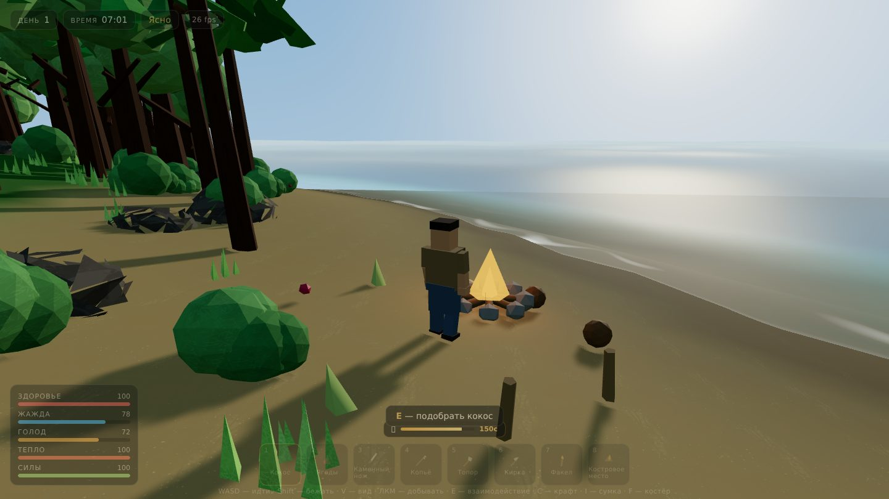

v0.13.1 · ямы в блоках, трава из оттенковLAST SHOREПоследний берег
3D-выживание: вид от третьего лица и от первого (клавиша V). Один большой остров, полные сутки за 12 минут, жажда, голод и холод. Добывай дерево и камень, охоться на кабанов, крафти снасти, спускайся в шахту за рудой и куй собственные клинки на верстаке — разводи костёр и держись до сигнального маяка.
- Живой остров: пляжи, джунгли, горы, родники
- Процедурные текстуры, ветер в листве, вода с прибоем
- Шахта: каменный слой и магма с обсидианом
- Звери: кабаны, крабы, чайки и змеи
- Крафт + верстак: выкуй свой клинок и заточи
- Хотбар на 10 слотов, костёр и готовка
- Прицел в центре экрана: бей и бери по нему
- Процедурный звук: удары, звери, огонь, птицы